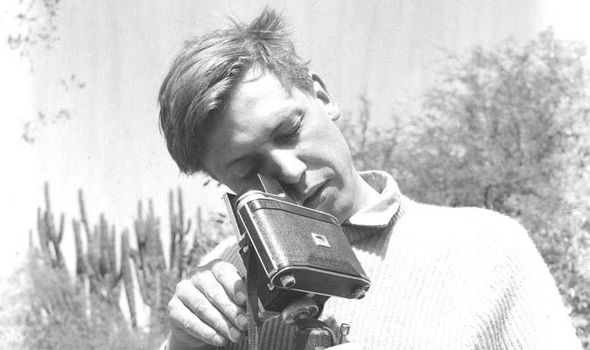

A young David Attenborough looking through a camera
Sir David Frederick Attenborough OM CH CVO CBE FRS FLS FZS FSA FRSGS (/ˈætənbrə/; born 8 May 1926) is an English broadcaster and natural historian. He is best known for writing and presenting, in conjunction with the BBC Natural History Unit, the nine natural history documentary series forming the Life collection that together constitute a comprehensive survey of animal and plant life on Earth.
- 1979 - BBC and its co-producer Turner Broadcasting signed a deal to produce Life on Earth
- 1984 - The Living Planet
- 1990 - The Trials of Life
- 1993 - Life in the Freezer
- 1995 - The Private Life of Plants
- 1998 - The Life of Birds
- 2002 - The Life of Mammals
- 2005 - Life in Undergrowth
- 2008 - Life in Cold Blood
- 2001 - The Blue Planet
- 2006 - Planet Earth
- 2009 - Life
- 2016 - Planet Earth 2
- 2017 - Blue Planet 2
- 2019 - Our Planet
David in Numbers
- 92 years old
- 115 documentaries made or narrated
- 26 books written
- 14.01 million people watched Blue Planet episode 1 - the highest viewing figure
- 8 postnominal honours - David holds more titles than any other person (OM CH CVO CBE FRS FLS FZS FSA FRSGS)
- 20 different species, and one genus, have been named after Attenborough, putting him in third place of the all time list
- 30 honorary degrees from British universities, and three honorary fellowships